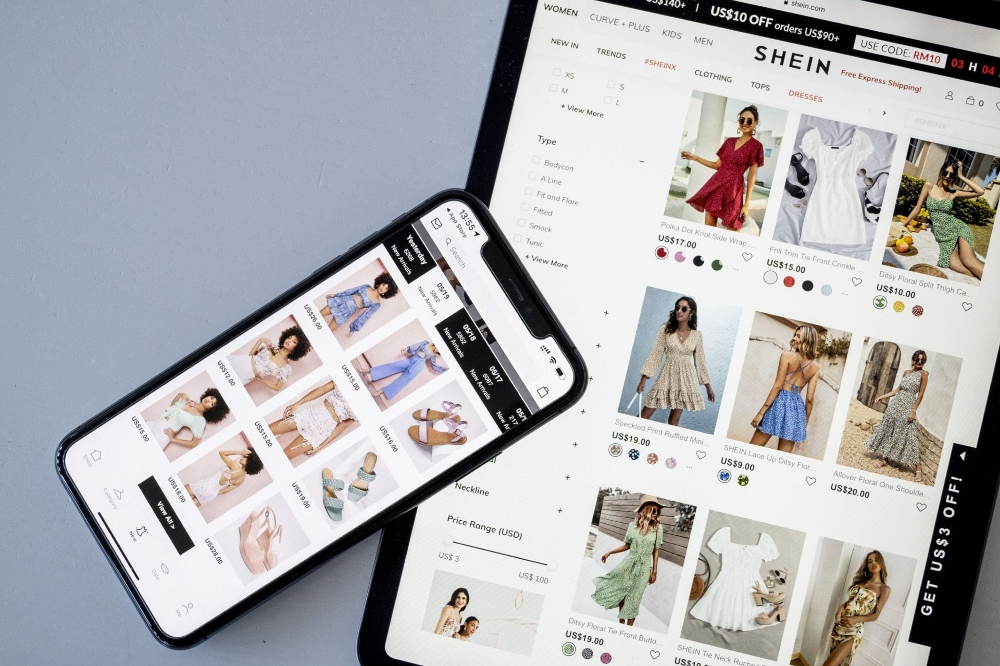

3 - Importância do Projeto de Interfaces e Usabilidade:
Para dar um exemplo mais claro de usabilidade podemos citar a loja de roupas Shein . A interface é como um passeio tranquilo, com tudo no lugar certo. A forma como eles organizam as roupas, as opções de busca e o jeito fácil de comprar são incrivelmente atraentes. É aquele tipo de site que te faz pensar: "Por que todos os sites não são assim?"
Facilidade de Uso
A facilidade de uso não é só sorte; é um exemplo claro de como o projeto de interfaces e a usabilidade fazem toda a diferença. A Shein mostra que quando você facilita a vida do usuário, eles voltam e, claro, compram mais. O segredo está em tornar a experiência do usuário tão suave quanto comprar aquele par de tênis incrível que você nem sabia que precisava.
Facilidade de Compra
Além disso, a facilidade de compra é notável. O processo de seleção, adição ao carrinho e finalização da compra é tão fluido quanto a jornada de descobrir aquela peça única que se encaixa perfeitamente no estilo do usuário. O compromisso da Shein com o design de interfaces e usabilidade vai além do estético, alcançando a essência de uma experiência de compra online inesquecível.
br.shein.com